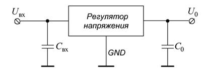
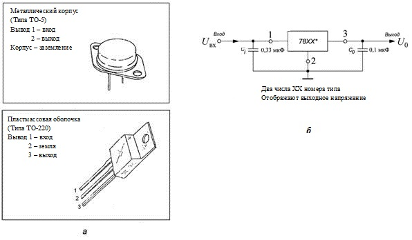
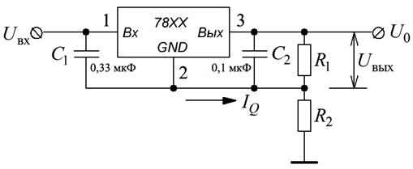
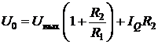
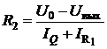
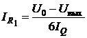
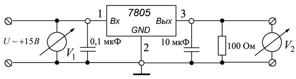
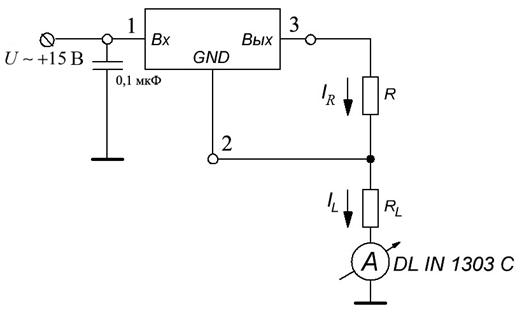

электронный ресурс по учебной дисциплине 1-58 01 01 - "Инженерно-психологическое обеспечение информационных технологий"
|
||
| Оглавление | Программа | Теория | Практика | Контроль знаний | Об авторах | ||
|
Практика ПРАКТИЧЕСКАЯ РАБОТА № 7 Изучение работы и расчет стабилизатора тока 1. Цель работы: закрепление теоретического курса, приобретение навыков решения задач, активизация самостоятельной работы студентов. 2. Теоретические сведения Стабилизатор напряжения представляет собой схему, которая обеспечивает неизменное значение выходного напряжения независимо от изменений входного напряжения и тока нагрузки в определённом диапазоне. Преимущества стабилизатора: 1. Простота подсоединения к внешней цепи. 2. Минимальное количество внешних компонентов (в некоторых случаях требуется отсутствие внешних компонентов). Рисунок 1 показывает стандартную схему включения стабилизатора напряжения.

Рис 1. Стандартный стабилизатор напряжения
Для всех микросхем ёмкость входного конденсатора Cвх должна быть не менее 2,2 мкф для керамических или оксидных танталовых и не менее 10 мкф – для алюминиевых оксидных конденсаторов, а выходного конденсатора C0 – не менее 1 и 10 мкф соответственно. Существует большое разнообразие стабилизаторов с фиксированным выходным напряжением: 5, 5.2, 6, 8, 10, 12, 15, 18 и 24 В как с положительной, так и отрицательной полярностью напряжения. Выходной ток колеблется в диапазоне от 100 мА до 3 А. 78хх - серия включает в себя стабилизаторы с семью значениями выходного напряжения. Последние две цифры в номере 78хх отображают значение выходного напряжения, как показано в табл. 1. Таблица 1

Рис. 2. Серия 7800 стабилизатора: а ‑ корпусного типа, б ‑ стандартного применения
2.1. Регулируемые стабилизаторы напряжения 78хх
Если требуется нестандартное значение стабилизированного выходного напряжения или плавное его регулирование, удобно использовать специализированные регулируемые стабилизаторы, поддерживающие напряжение 1,25 В между выходом и управляющим выводом. Резисторы R1 и R2 образуют внешний регулируемый делитель напряжения, который входит в цепь установки уровня выходного напряжения Uвых, равного , где Iпот=50...100 мкА – собственный потребляемый ток микросхемы. Число 1,25 в этой формуле – это упомянутое выше напряжение между выходом и управляющим выводом, которое поддерживает стабилизатор в рабочем режиме.

Рис. 3. Типовая схема включения регулируемого стабилизатора напряжения
Выходное напряжение цепи (см. рис 3):  и
. Если мы установим , значит,  и
По схеме на рис 3 можно включать и стабилизаторы с фиксированным выходным напряжением. Однако, во-первых, потребляемый ими ток значительно больше (2...4 мА) и, во-вторых, он менее стабилен при изменении выходного тока и входного напряжения. По этим причинам максимально возможного коэффициента стабилизации устройства достичь не удастся. Для снижения уровня пульсаций на выходе, особенно при большем выходном напряжении, рекомендуется включать сглаживающий конденсатор емкостью 10 мкФ и более. К конденсаторам C1 и C2 требования такие же, как и к соответствующим конденсаторам фиксированных стабилизаторов. Если стабилизатор работает при максимальном выходном напряжении, то при случайном замыкании входной цепи или отключении источника питания микросхема оказывается под большим обратным напряжением со стороны нагрузки и может быть выведена из строя. Для защиты микросхемы по выходу в таких ситуациях параллельно ей включают защитный диод. Все сказанное служит только для предварительного выбора стабилизатора, перед проектированием блока питания следует ознакомиться с полными справочными характеристиками (максимально допустимое входное напряжение, ток нагрузки, рабочая температура и т. д.).
3. Требуемое обеспечение MULTISIM.
4. Порядок проведения работы 4.1. Типовое применение стабилизатора 7805
1. Соберите в MULTISIM схему согласно рис. 4.  Рис. 4. Схема для исследования стабилизатора 7805 2. Проведите расчёт U0 в зависимости от Uвх. Заполните таблицу 2. Таблица 2
3. Сравните значения напряжения U0 и Uвх. 4.3. Источник тока на микросхеме 7805 1. Соберите схему рис.5. Используйте следующие номиналы элементов: и ;  Рис. 5. Цепь для исследования источника тока 2. Проведите рассчёт Iн от значения Uвх. Занесите результаты в таблицу 4. Таблица 4
3. Сделайте выводы. 5. Содержание отчёта 1. Цель работы. 2. Исследуемая цепь. 3. Результаты исследований. 4. Выводы. 5. Ответы на контрольные вопросы. 6. Контрольные вопросы 1. Что такое стабилизатор напряжения? 2. Укажите области применения стабилизаторов напряжения. 3. Как уменьшить пульсации выходного напряжения? Практика
|
| (С) БГУИР |